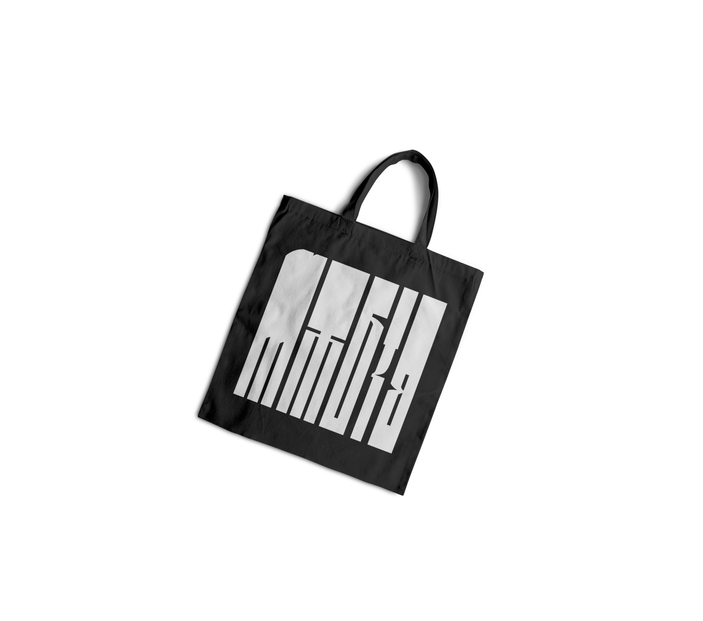
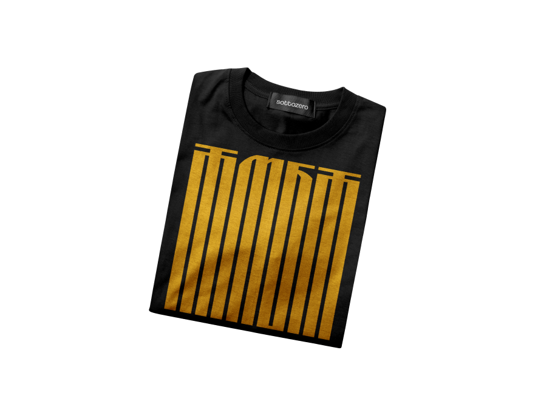
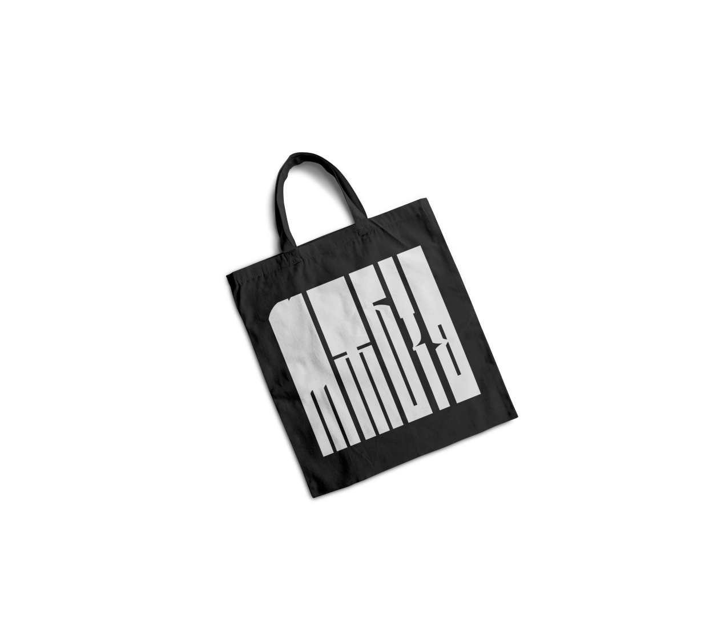

STUP ČAKAVSKOG SABORA
Čakavski sabor je za svoj zaštitni znak odabrao slovo S, koje u glagoljici izgleda kao istarska gljiva. U staroslavenskoj azbuci slovo S se naziva slovo, a taj termin označava više pojmova: um, razum, riječ.
 MEANDRICA TYPE SPECIMEN
MEANDRICA TYPE SPECIMEN
Meandrica je glagoljični varijabilni font inspiriran meandrima Julija Knifera — hrvatskog umjetnika čiji su monokromni meandri postali simbol konceptualne umjetnosti druge polovice 20. stoljeća.

Kao i Kniferovi meandri, Meandrica istražuje mogućnosti ritma kontinuiranih formi i kontrasta. Čitljivost je reducirana, ali obzirom da su nam nametnuli latinicu davnih dana, ta mana ovog fonta može smetati samo povjesničarima i arheolozima. Zato se postavlja pitanje, je li Meandrica uopće font? Ili je vizualni performans u obliku .otf datoteke?
KNIFER
Glagoljica predstavlja inovativni alfabet nastao sredinom 9. stoljeća, izvorno koncipiran za fonetski precizan prikaz slavenskih jezika u kontekstu kršćanske misije među slavenskim narodima.
E sad, uglata glagoljica je hardcore verzija originalne, oble glagoljice. Isti alfabet, ali s oštrim kutevima i energijom nekog srednjovjekovnog admina koji više nema strpljenja za spirale.
Nastala je vjerojatno u 13. — 15. stoljeću, kad su svećenici na području današnje Hrvatske (posebno u Istri i na Kvarneru) počeli pisati brže, praktičnije i na lošijem papiru — pa su zaobljene linije pretvorili u ravne udarce.
I kako prikazati glagoljicu a ne pohvaliti se najboljim glagoljičnim muzejem? Aleja glagoljaša je kameni spomenput između dvaju istarskih dragulja — srednjovjekovnih gradova Hum (najmanji grad na svijetu, prema Guinnessu) i Roč (glagoljička prijestolnica). Dugačka je oko 7 kilometara i puna je simbola, natpisa i skulptura u obliku glagoljičkih slova.
Aleju je osmislio Josip Bratulić, kiparski ju je izveo Želimir Janeš, a naziv joj je dao Zvane Črnja.
Čakavski sabor je za svoj zaštitni znak odabrao slovo S, koje u glagoljici izgleda kao istarska gljiva. U staroslavenskoj azbuci slovo S se naziva slovo, a taj termin označava više pojmova: um, razum, riječ.

Omne trinum perfectum = sve trojno je savršeno. Zašto stol? Tu se okuplja porodica, jede se, razgovara, dogovara — to je mjesto okupljanja.

Najzanimljivija informacija za ovaj spomenik je da je smješten ispod hrasta punog imelinih gnijezda, a od bijele imele na Humšćini prave poznatu rakiju zvanu biska.

U Brnobićima, uz crkvicu Gospe od Snijega, zid od suhozida nosi replike 11 najstarijih glagoljskih natpisa — od Bašćanske ploče do Valunske ploče.

Ovo je zapravo spomenik tadašnjoj prognozi. Predstavlja Učku i oblak iz kojeg bi Istrijani
čitali hoće li kišiti ili ne.

Kamenčuga s tri pisma: glagoljica, ćirilica i latinica. A Grgur Ninski je bio biskup koji je inzistrao na bogoslužju na narodnom jeziku.

Kameni „stećci" penju se stazom pišući glagoljicom ISTARSKI RAZVOD (dokument iz 1325. koji je prvi put spomenuo „hrvatski jezik" u pravnom tekstu.)


Osam kamenih blokova oblikovanih kao tiskarska slova ispisuje ime ŽAKN JURI — čovjeka koji je 1483. godine pomogao izdati prvu hrvatsku tiskanu knjigu. Spomenik je ujedno i klupa: nakon uspona od Roča, zaslužio si sjesti i pročitati natpis VITA VITA / ŠTAMPA NAŠA.

Tri kamenje kocke na zajedničkoj kičmi simboliziraju tri doba: antiku, srednji vijek i novi vijek, ali jednu istu poruku: otpor nasilju i težnja slobodi su vječni. Nastao je umjesto planiranog obeliska kad je grom oborio stogodišnji hrast — priroda je odlučila da treba nešto drugačije.

Teška bakrena vrata s rogatim ručkama boškarine nose dva natpisa: stari glagoljski (I vrata ne zatvoret se v dne…) i suvremenu pjesmu Vladimira Pernića. Ulazak u najmanji grad svijeta započinje otvaranjem vrata koja, prema natpisu, nikad ne bivaju zaključana, osim možda za one „okaljane".


